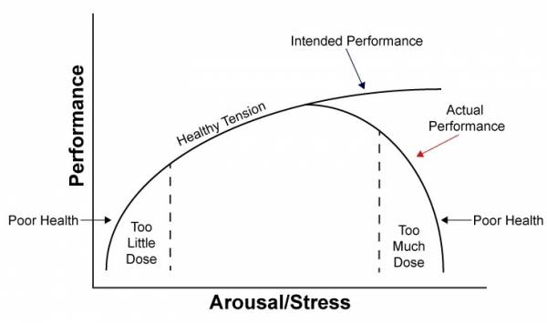

Note that the "guide" part of this essay focuses mostly on strength and recovery. I do not include how to develop or train flexibility, power, speed, etc., as listed in Crossfit's definition of fitness.
Crossfit answered this question with an article back in 2002, titled What Is Fitness?. Their answer consisted of three parts, all of which I think do an excellent job of providing a comprehensive definition of fitness:
Fitness measurement is also relative. Unless you're Mat Fraser (who is arguably the fittest person on Earth, despite protestations) or another professional Crossfitter, you are not and likely will never be the fittest. Instead, fitness should be measured relative to a few things:
My training philosophy is simple and quite similar to Crossfit's (with some parts cut out). Your body should be ready for anything that you throw at it (with limits imposed, of course). If you need to throw a ruck on and march a marathon on a whim or squat X plates for a set of 10, you should be able to do it. This is what some people refer to as "operator fitness". Mountain Tactical Institute sums it up well:
To summarize the above points: you're strong, fast, and can sustain long periods of both low- and moderate-intensity exercise.
Going about achieving this type of fitness should be done with as little time spent training as possible. A bit odd to hear, as most people correlate time spent training with increases in strength. The curve is parabolic with the sweet spot being right in the middle.
The only way to get stronger is to use progressively increasing resistance (referred to as the progressive overload principle). The resistance can be in the form of external weights (barbell, dumbbell, etc.) or using your body's leverage.
You must work in the rep ranges and rest times that meet your goals. The strength range of 1-6 is optimal. It contributes to endurance (if you can bench 315 lb for reps, 100 lb is easy, but the converse is not necessarily true) and hypertrophy, provided you eat enough (see the recovery section).
You must be consistent. Everyone has obligations, so missing a session isn't the end of the world. It's when you begin missing 2 out of 3 sessions per week, then only making 3 out of 6 sessions per two weeks, and so on. Consistency will win every time.
1RMs and training to failure should rarely be performed. They are immensely taxing on your CNS and cause more harm than good. Instead, work in the submaximal 3-5 range and estimate using a 1RM calculator.
You can get strong through submaximal lifting. One part of getting stronger is developing the movement patterns and teaching your body to perform it more efficiently. Even if you can squat 300 lb, squatting 225 lb will still be beneficial for helping to develop the movement patterns. The other way to get stronger is to gain muscle, as force (strength) is proportional to the physiological cross-sectional area.
Progression of weight or reps should be slow. This builds a solid foundation of strength and ensures muscles/tendons/ligaments have enough time to adapt to the new load. Patience is key. Trying to add 5-10 lb/week is unsustainable and will quickly overwhelm your body.
Form should be focused on and developed, but not at the cost of full range-of-motion (ROM) and strength. Having a massive arch during bench press may be considered better form for powerlifting, but ROM is sacrificed. An exercise set should be stopped when the form becomes dangerous, not necessarily bad—there is a difference.
Rest when you feel like you need it. You have years and years to train, and taking a day or two off to let your body recover will not be a detriment. If anything, it will be helpful.
Take a week or two completely off once or twice per year. This week helps your body recuperate after months of hard training. Basic walking and stretching are encouraged during this period.
Deload at least once every 8 weeks. See more information about deloading here. I normally cut both volume and intensity slightly.
All weight standards should be set in factors of BW, not absolute weight. Other standards, such as rowing, favor certain body types, but are by no means unattainable for the devoted athlete. Both endurance and strength are combined in each bullet point. Notice there is no 1RM. Once a standard (whether yours or mine) is met, it should be put on maintenance and your focus turned to other standards not yet achieved. For example, if you have 5 reps of 2xBW BS while back squatting 3x per week, switch to 2x front squat and 1x back squat per week. This will maintain your BS strength while increasing your FS strength.
Format is:
Lower body:
Upper body (1xBW is added weight, 0xBW is no weight added):
Endurance: